Facilitator guide · Leading with AI · Vanderbilt CHART Program · A Managers Voyage course
The paper packet. Everything before the room, the run of show for both paths, and every section script with its page pictured beside the notes.
| # | Section | Full | Core | What Core changes |
|---|---|---|---|---|
| 01 | Welcome | 3 | 2 | Core: skip the round of names, go straight to the QR. |
| 02 | The Chancellor's charge | 2 | 1 | Core: read the headline and the flywheel card, skip the three focus areas. |
| 03 | Which tool, which moment | 5 | 4 | Core: 30 seconds on the cards, then run all three cases. The drill is the part that matters. |
| 04 | Module 01: the four anchors | 4 | 3 | Core: teach the four anchors, run only the first drill question. |
| 05 | Module 02: clear communication | 7 | 5 | Core: load scenario 01 only, and protect the live rewrite. It is the moment people remember. |
| 06 | Module 03: coaching prep | 5 | 3 | Core: teach the prep and script distinction, run drill question 1, skip the paired activity. |
| 07 | Module 04: sharper decisions | 4 | 2 | Core: read both prompts aloud, run the premortem on your own example, skip the drill. |
| 08 | Module 05: three habits | 4 | 3 | Core: 90 seconds on the three habits, then protect the commitment round. Never cut the commitment. |
| 09 | Guardrails | 2 | 1 | Core: read Rule 01 only. It is the one people break. |
| 10 | Practice now | 5 | 4 | Core: keep the full paired activity and cut your own talking to nothing. |
| 11 | Knowledge check | 2 | Core: cut entirely. The commitment round already gave you the Level 2 signal. | |
| 12 | Recap and close | 2 | 2 | Core: unchanged. Never cut the close. |
| 13 | Appendix | Reference only. Not taught, and it carries no time on either path. | ||
| Total | 45 | 30 |
If Nobody in the room can sign into Amplify
Run every live prompt yourself on the screen and have the room supply the inputs out loud. The learning is in the prompt, not in who typed it. Fix the access afterwards and say you will.
If Someone says they are not allowed to use AI at all
Take it seriously and do not argue. Ask which tool and which data, because the answer is usually about a specific restriction rather than a blanket one. Point at Module 03: preparation for a conversation involves no protected data at all.
If The room is more experienced than you expected
Cut the tool cards to 60 seconds, skip the anchor drill, and spend the recovered time on Module 04. Experienced users are usually weakest at interrogating a confident answer.
If The room is less experienced than you expected
Drop Module 04 entirely and say so. Spend the time on Module 02 and let everyone run one prompt successfully. One completed prompt beats five explained ones.
If You are running ten minutes behind at Module 04
Switch to the Core path from there: read the two prompts aloud, skip the drill, and protect the habit pick in Module 05. The habit is the only thing that changes anyone's week.
If Someone volunteers a real situation involving a named person
Thank them, then restate it in role terms out loud before you type anything. Doing that correction in public, calmly, teaches Rule 01 better than the slide does.
Is this going to replace my team?
Not a question to dodge. Say what is true: nothing in this course automates a person's job. It automates the recap, the triage, and the first draft. Then name the honest part: what a manager does with the time back is a real choice, and this course argues for spending it on the people.
How do I know it is not making things up?
You do not, which is why Truth is one of the four anchors rather than a footnote. The working rule: any number, quote, or policy gets checked before it moves anything. If it never leaves your own thinking, the cost of an error is low; the moment it enters a memo with your name on it, the cost is yours.
Is it cheating to use AI for feedback?
Ask the room first, because the answers are worth hearing. Then land it: preparing is not cheating, and outsourcing is. If the person across from you would feel differently knowing how it was written, that is your answer. This is why every coaching prompt in Module 03 ends with 'do not write scripts.'
Which tool should I just use for everything?
Amplify, if you want one answer and you are going to stop listening now. It is approved for Levels 1 to 3 and it is the when-in-doubt choice. The other two earn their place in specific moments, and the course names those moments.
My director does not want AI-written communication going out
Agree with the concern and separate two things: a draft written by a tool and sent unedited, which is what they are objecting to, and a draft the manager shaped into their own voice, which is what Anchor 01 requires. Offer to show them the rewrite move.
Two hours a week seems made up
It is an estimate, and the course says so on the page. Do not defend it as research. Say: pick one habit, note what it saves you over two weeks, and you will have your own number, which is worth more than ours.
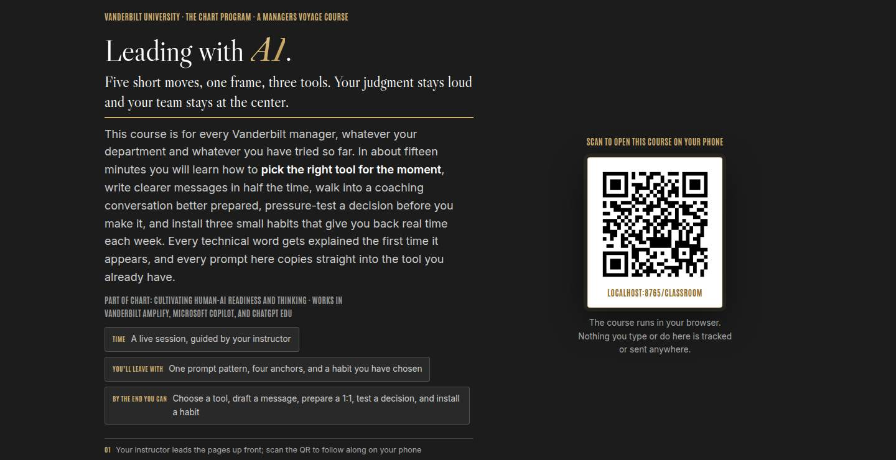
Get every device on the course and set the expectation that this session involves doing, not watching.
“Welcome. This is 45 minutes, five short modules, and you will leave having actually written something. Scan the code on the screen and the whole course opens on your phone. Follow along there or watch up here, whichever you prefer. One thing before we start: I asked you to bring something real you owe someone this week. Keep it in mind, because in about half an hour you are going to write it.”
“Show of hands, and be honest: who has used an AI tool for work in the last week? Expect a third to half the room, and expect a few who use it daily to keep their hands down.”
“Before the modules, sixty seconds on why the university is asking managers to work this way at all.”
30-min core: Core: skip the round of names, go straight to the QR.
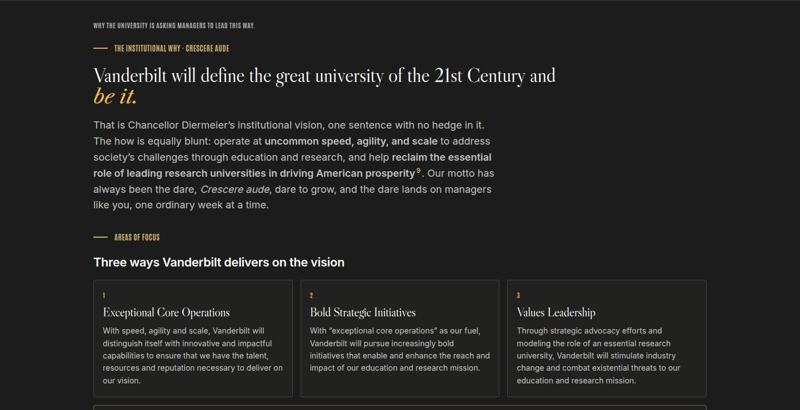
Connect a productivity course to the institutional reason it exists, so it does not read as a tools demo.
“One page on why this exists. The Chancellor's vision is a single sentence with no hedge in it: Vanderbilt will define the great university of the 21st Century and be it. The how is speed, agility, and scale. That lands on managers as an ordinary Tuesday, and the part I want you to hold is at the bottom: values-driven leadership is visible in how a manager writes, coaches, and decides. That is exactly what the next five modules are about.”
“What does uncommon speed cost us if nobody is holding the judgment? Take one answer, do not open a discussion, because Module 01 is the answer.”
“Three tools, one rule that decides between them, sixty seconds.”
30-min core: Core: read the headline and the flywheel card, skip the three focus areas.
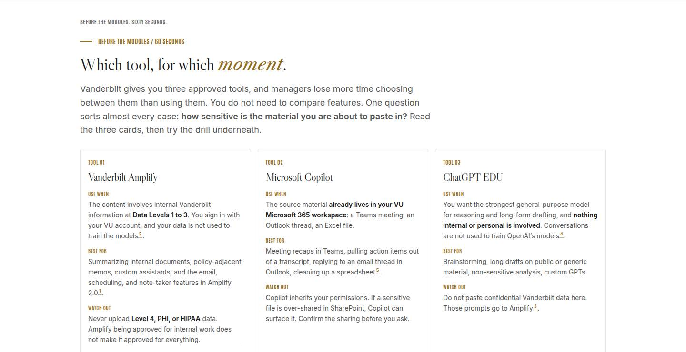
Replace feature comparison with one decision rule, and make the rule land through cases rather than assertion.
“You have three approved tools and managers lose more time choosing between them than using them. You do not need to compare features. One question sorts almost every case: how sensitive is the material you are about to paste in. Amplify takes internal Vanderbilt information at Levels 1 to 3 and it is the when-in-doubt choice. Copilot is best when the thing already lives in your Microsoft 365 workspace. ChatGPT EDU is approved to a lower level, so it is for material with nothing internal or personal in it. Now three cases, and I want hands before the answer.”
“Case 3, hands up: who picked a tool? Expect most of the room. That is the point, and it is not a gotcha.”
“That is which tool. Module 01 is the frame that goes around all three.”
30-min core: Core: 30 seconds on the cards, then run all three cases. The drill is the part that matters.
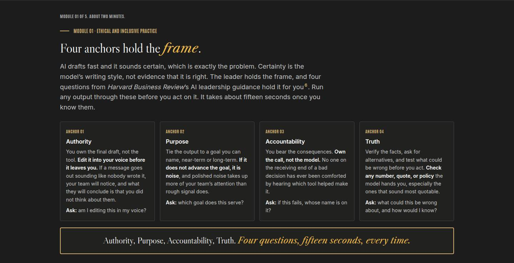
Give the room a fifteen-second check they will actually run, and make it stick through three failure cases.
“AI drafts fast and it sounds certain, which is exactly the problem. Certainty is its writing style, not evidence it is right. Four questions hold the frame. Authority: am I editing this in my voice. Purpose: which goal does this serve. Accountability: if this fails, whose name is on it. Truth: what could this be wrong about, and how would I know. Fifteen seconds, every time. Here are three managers who skipped one.”
“In the pairs: which of the four was hardest to answer? Take two answers from the room. Purpose comes up most, and that is worth naming.”
“The frame is set. Now the pattern that writes almost everything you send.”
30-min core: Core: teach the four anchors, run only the first drill question.
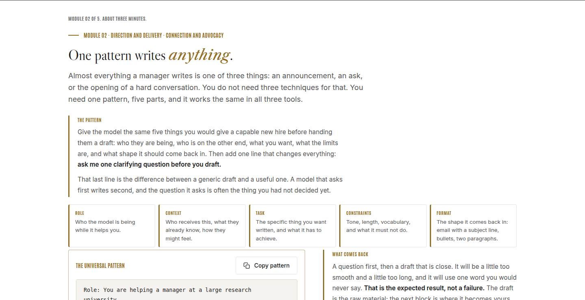
The core skill of the session. Everyone should watch a bad prompt become a good one and understand which part did the work.
“Almost everything you write is an announcement, an ask, or the opening of a hard conversation. One pattern covers all three. Role, Context, Task, Constraints, Format. And one line that changes everything: ask me one clarifying question before you draft. A model that asks first writes second, and the question it asks is usually the part of the message you had not decided yet. Watch.”
“Which constraint changed the draft most? Expect the word count and the 'do not invent policy' line to win, and expect somebody to be surprised by that.”
“Same discipline, aimed at the conversation you are about to have.”
30-min core: Core: load scenario 01 only, and protect the live rewrite. It is the moment people remember.
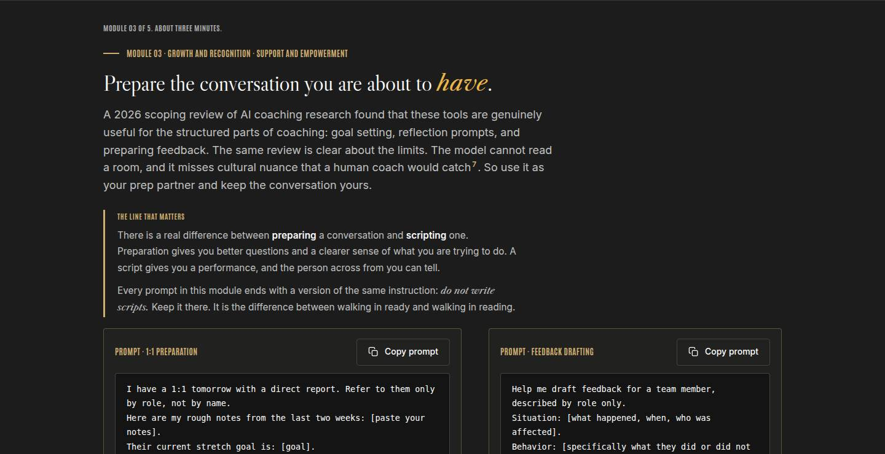
Draw the line between preparing a conversation and outsourcing it, and make the line feel obvious rather than moralistic.
“The research on AI coaching is genuinely encouraging for the structured parts: goal setting, reflection prompts, feedback prep. It is also clear on the limits. It cannot read a room and it misses cultural nuance. So there is a real line here, and it is between preparing a conversation and scripting one. Preparation gives you better questions. A script gives you a performance, and the person across from you can tell. Every prompt in this module ends with the same instruction: do not write scripts.”
“In the pairs: which question do you actually want to keep? One answer per table.”
“Same tools, aimed at the call everyone is waiting on.”
30-min core: Core: teach the prep and script distinction, run drill question 1, skip the paired activity.
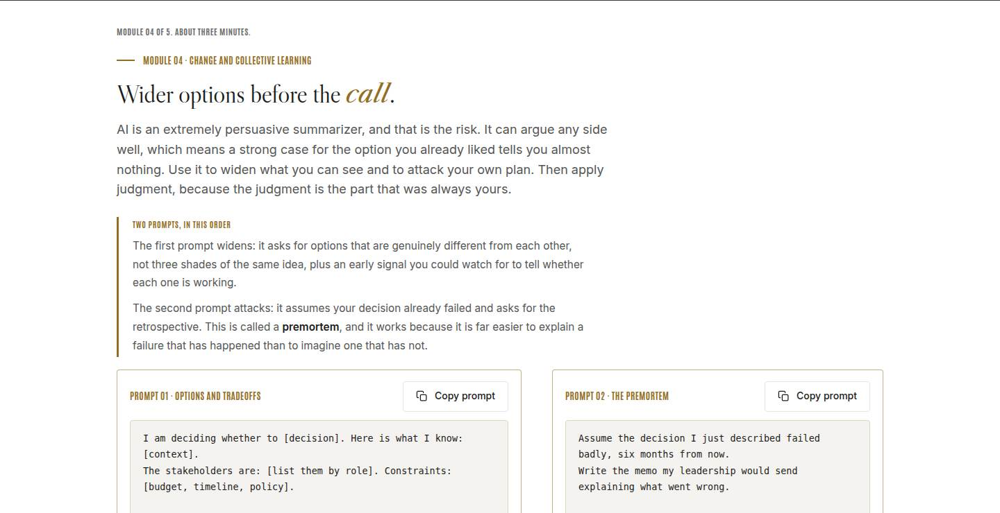
Teach the premortem, and teach that a confident recommendation is the beginning of the work rather than the end.
“AI is an extremely persuasive summarizer, and that is the risk. It can argue any side well, which means a strong case for the option you already liked tells you almost nothing. Two prompts, in this order. The first widens: three genuinely different options, the strongest case and biggest risk for each, and a signal you could watch for in 30 days. The second attacks: assume it already failed and write the retrospective. That is a premortem, and it works because explaining a failure that happened is far easier than imagining one that has not.”
“What did the premortem name that you would not have said out loud in a meeting? This is the question the module exists for.”
“Last module, and the only one that changes your calendar.”
30-min core: Core: read both prompts aloud, run the premortem on your own example, skip the drill.
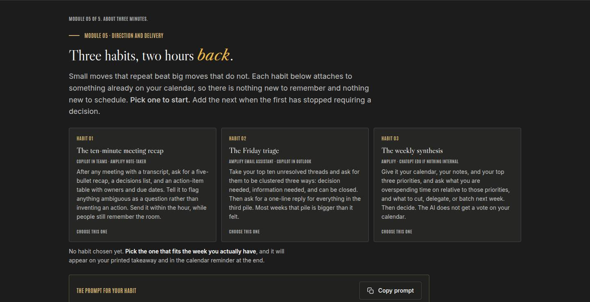
Convert 40 minutes of understanding into one thing that will happen next week. This is the section the whole session exists for.
“Everything so far was capability. This is the part that changes your week. Three habits, each attached to something already on your calendar so there is nothing new to remember. The ten-minute meeting recap. The Friday triage. The weekly synthesis. Pick one. Not three, one. Add the next when the first has stopped requiring a decision. And one honest note: the two hours a week on the screen is our estimate, not a research finding. Pick a habit, watch what it saves you for two weeks, and you will have your own number.”
“Around the table: which habit, which day, what time? Take the whole round. Do not shortcut it.”
“Four rules that keep all of this safe, and then you write the real thing.”
30-min core: Core: 90 seconds on the three habits, then protect the commitment round. Never cut the commitment.
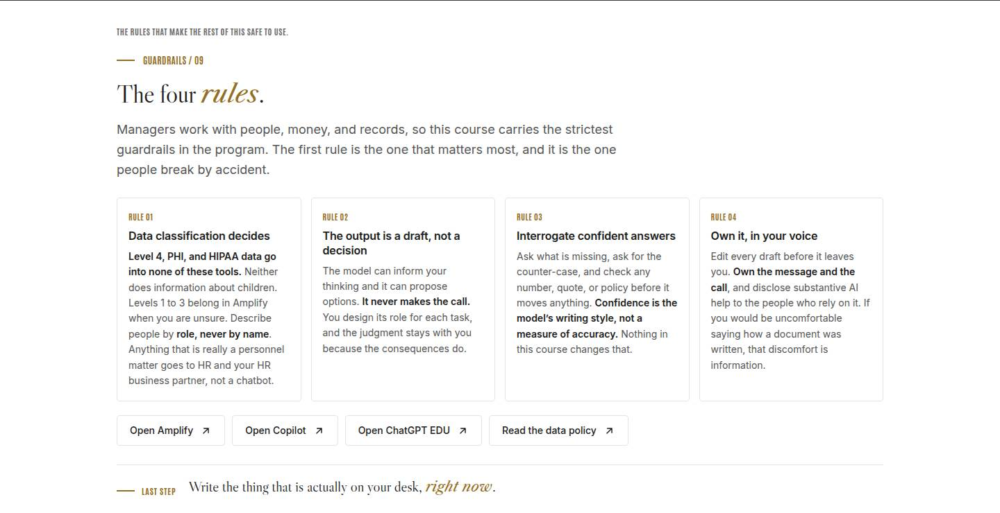
State the rules once, plainly, with the strictest first.
“Four rules. The first matters most and it is the one people break by accident. Data classification decides: Level 4, protected health information, and HIPAA data go into none of these tools, and neither does information about children. Levels 1 to 3 go to Amplify when you are unsure. People are described by role, never by name. Anything that is really a personnel matter goes to HR. The other three: the output is a draft not a decision, interrogate confident answers, and own it in your voice.”
“Anything you were about to do this week that Rule 01 just stopped? Wait for it. Somebody usually says yes.”
“Now the thing you brought with you.”
30-min core: Core: read Rule 01 only. It is the one people break.
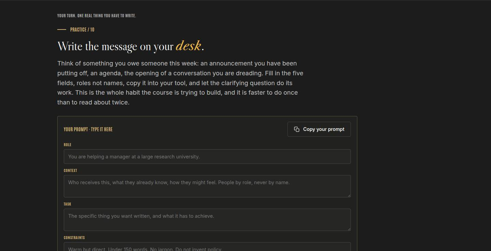
Everyone leaves having written the real thing, not an exercise.
“The thing I asked you to bring. Five fields, roles not names, and then you run it. In pairs: interview your partner about what they owe someone and fill in their five fields for them. Then swap. When both are done, one more trade: tell your partner the single constraint they forgot. Go.”
“What constraint did your partner forget? Two answers from the room. It is almost always length or tone.”
“Four questions to check it stuck, and then we are done.”
30-min core: Core: keep the full paired activity and cut your own talking to nothing.
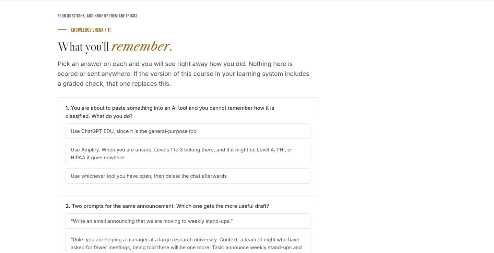
A quick Level 2 check, run as a room rather than as a test.
“Four questions, no tricks, nothing scored or sent anywhere. Hands up before I click.”
“Question 3, hands up before the answer. Expect a split, and expect the split to be instructive.”
“The close: what you learned, and the one thing to do this week.”
30-min core: Core: cut entirely. The commitment round already gave you the Level 2 signal.
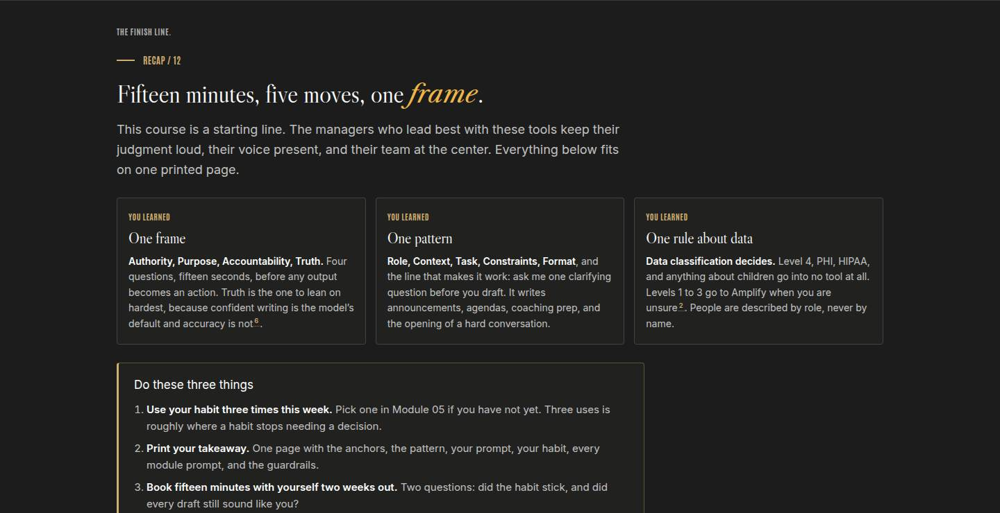
Land the three things worth remembering, confirm the commitment, and take the Level 1 reading.
“Three things to keep. One frame: Authority, Purpose, Accountability, Truth, fifteen seconds before any output becomes an action. One pattern: Role, Context, Task, Constraints, Format, and ask me one clarifying question before you draft. One rule about data: classification decides, and when you are unsure it goes to Amplify. Your habit is on your takeaway. Use it three times this week, which is roughly where it stops needing a decision. Print the page before you stand up.”
“Fist to five, right now, all at once: how useful was this? Then one voice on why, from anyone under three.”
“Seven days from now, one question in your inbox: did the habit happen?”
30-min core: Core: unchanged. Never cut the close.
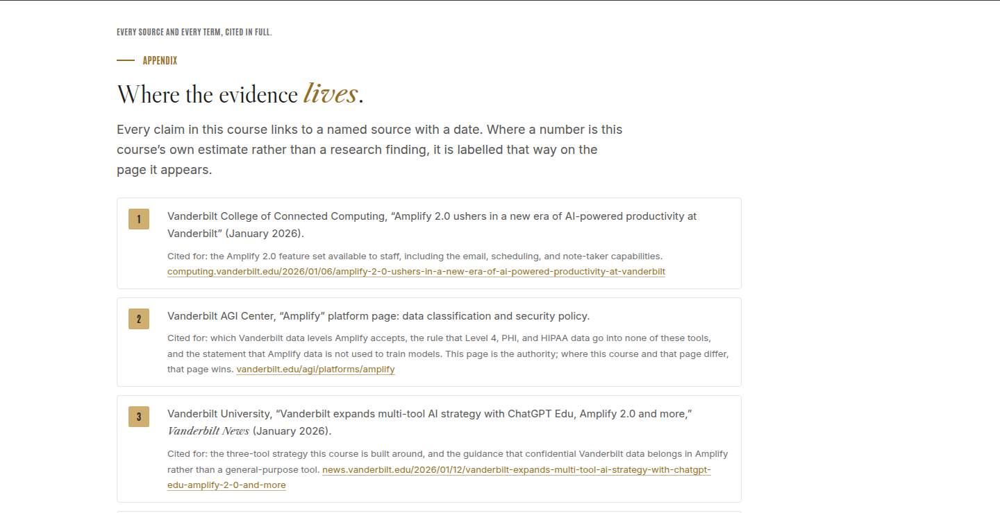
Every claim cited, and every technical term defined, for the person who wants to check your work.
“Not a page we go through. It is there because every number in this course is cited and every technical word is defined. If somebody challenges a claim, this is where the answer is.”
“None. Do not stop here.”
“None. This is the end of the course.”
30-min core: Reference only. Not taught, and it carries no time on either path.